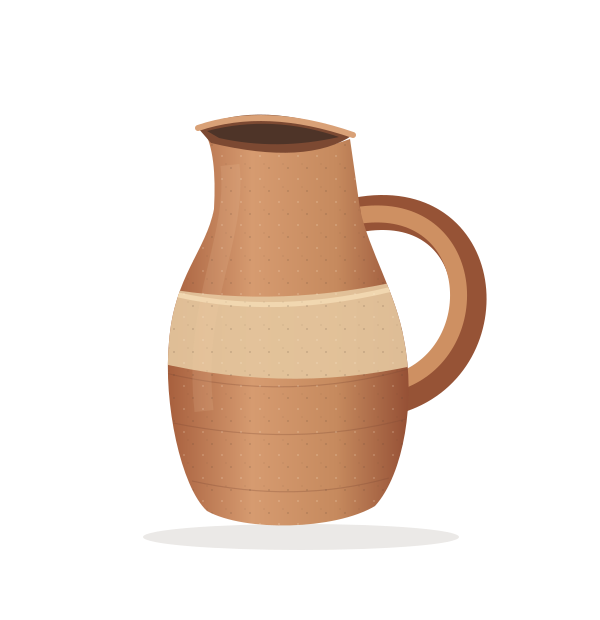
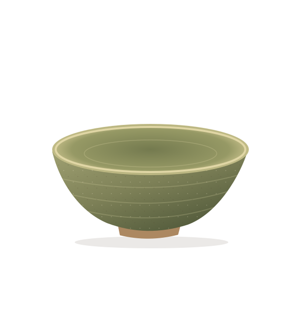

CLAY PITCHER, BOWL AND VASE
Three clay pieces
for the table.
A pitcher, a low bowl and a vase,
thrown in warm clay with the
turning lines left in.

Just right.
01 / ARC PITCHER / 24 CM
MATERIAL
Terracotta clay
and a pale glaze.
The glaze covers only part of each piece, so the clay shows at the foot and the rim. No two come out exactly alike.

MAKING
Three steps
at the wheel.
- 01
Find the form
A curve that fits a palm. A lip that pours. Useful comes before ornamental.
- 02
Leave a trace
Turning lines and tiny flecks stay visible. The surface remembers how it was made.
- 03
Make room for daily life
For breakfast, a branch from the garden or a cup of tea.
THE COLLECTION
Three forms
from the same clay.
The pitcher, the bowl and the vase share one clay body and one glaze.
Take a closer look ↗Materials and care
A note on materials and care
The pieces are drawings, not tested products. For real ceramics, follow the maker’s verified instructions for food contact, washing and temperature changes.